<ion-content fullscreen scroll-y="false">
    <ion-slides  pager="true"  pager="false" #mySlider>
  
      <ion-slide>
        <div (click)="swipeNext">
        
          </div>
          <br/>
          <p class="pstyle1">Das ist ein Assembly Point, wir<br>schicken dich automatisch
          über<br>diese um mit anderen zu fahren.
          </p>
          <br/>
          <ion-row>
            <ion-col class="ion-text-right">
                <ion-button (click)="swipeNext()"  class="b-btn primary">
                    <ion-icon style="color:black" slot="icon-only" name="arrow-forward"></ion-icon>
                </ion-button>
            </ion-col>
        </ion-row>
      </ion-slide>
  
      <ion-slide>
        <div class="slide" style="margin-top: 45vh;">
          <p class="pstyle1">Du fährst zu dieser Addresse ofters?<br>Dann speicher' sie
            einfach ab. Deine<br>gesicherten Addressen findest du auf<br>dem Hauptbildschirm.
          </p>
          <ion-button (click)="dismiss()" fill="clear" style="text-align:right;">
          <p class="pstyle1" style="font-size: 14px;"> Clicke um Tutorial zu beenden</p>
          <ion-icon style = "color:white" name="arrow-forward-outline"></ion-icon>
          </ion-button>
          <br/><br/>
          <div (click)="dismiss()">
            
          </div>
     </div>
      </ion-slide>
  
    </ion-slides>
  </ion-content>